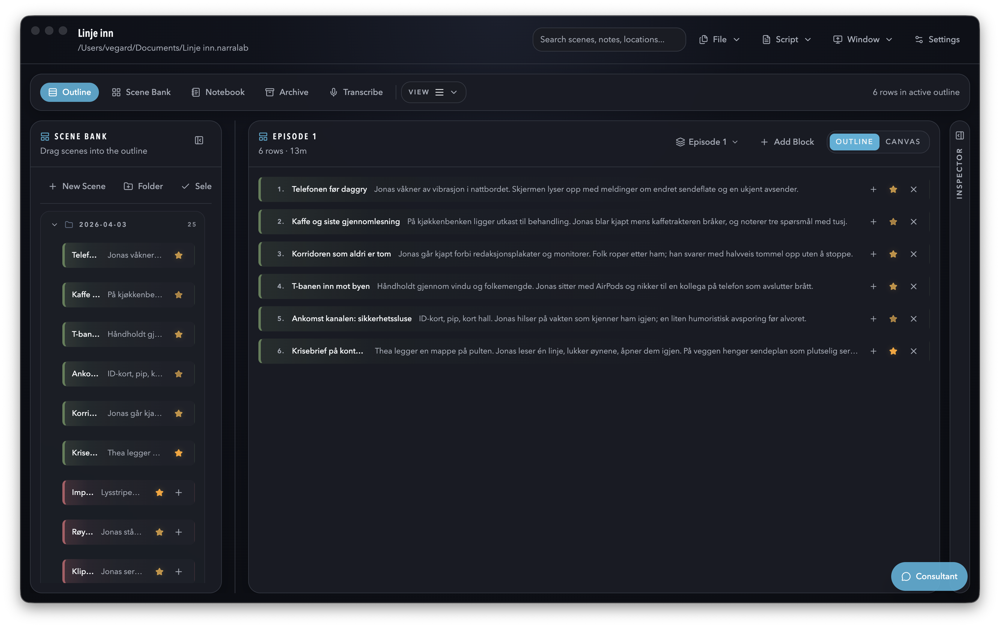

NarraLab: komplett håndbok for daglig bruk
Denne manualen er skrevet for deg som vil kunne åpne appen og jobbe effektivt med en gang. Den dekker prosjektfiler, menyer, alle arbeidsflater, import og eksport, transkribering, AI-konsulent, flere vinduer, layoutlagring og de viktigste arbeidsmønstrene.

Kom i gang
Opprett eller åpne et prosjekt
Bruk File-menyen øverst til å velge New Project eller Open Project. Når et prosjekt er åpnet, vises prosjektets navn og filsti i toppfeltet.
Velg hvordan du vil jobbe først
For de fleste er startrekkefølgen: Scene Bank for å bygge materialet, Outline for å organisere dramaturgien, og Inspector for detaljarbeid.
Legg inn scener
Du kan lage scener manuelt, importere JSON, eller importere en Excel-basert opptakslogg. Scene Bank er stedet der alt råmateriale samles.
Bygg et board
I Outline legger du scener i ønsket rekkefølge og kan supplere med kapittelkort, voiceover, narration, text cards og notater.
Bruk inspector for presisjon
Når du klikker på en scene, et block-kort eller et board, åpnes relevante felt i inspector. Endringer autosaves normalt etter kort forsinkelse.
Prosjekt og filer
File-menyen
| Funksjon | Hva den gjør |
|---|---|
| New Project | Oppretter en ny lokal prosjektfil og starter et tomt prosjekt. |
| Open Project | Åpner en eksisterende .narralab- eller eldre .docudoc-fil. |
| Save As | Lagrer prosjektet som en ny fil. Praktisk for versjoner, forks eller trygg lagring før større endringer. |
| Import Shoot Log (.xlsx) | Legger til scener og beats fra Excel-basert opptakslogg. |
| Import JSON | Importer prosjektdata fra JSON-snapshot. |
| Export JSON | Eksporterer et JSON-snapshot av prosjektet. |
Prosjektformat
- Primær lagring er lokal prosjektfil på disk.
- Åpning av eldre filer kan trigge migreringer ved behov.
- JSON er eksport-/importformat, ikke appens primære lagringsmotor.
- Save As fungerer som en kopi av prosjektet til ny fil.
Script-eksport
Script-menyen eksporterer aktivt board i flere formater:
- Formatted TXT: lesbar manuslayout med sentrert VO/forteller.
- Plain TXT: enkel tekstversjon.
- Screenplay HTML: HTML-layout i manusstil.
- Word Screenplay: Word-kompatibelt dokument.
- Markdown: strukturert eksport for videre redigering.
Excel-import av opptakslogg
Importen forventer et Excel-oppsett med ark for scener og beats. Typisk scenedata inkluderer blant annet:
- scene-referanse, opptaksdato, tittel og synopsis
- location, characters, category og function
- estimerte og faktiske lengder
- editorial status, key rating og farge
- camera notes, audio notes, notes, quote moment, quality og source paths
Outline
Outline er hovedflaten for å sette sammen fortellingen. Her bygger du et board av scener og strukturblokker.
Hva et board kan inneholde
- Scener
- Chapter Header
- Voiceover
- Narration
- Text Card
- Note
View modes
- Outline: liste-/rekkefølgevisning.
- Canvas: friere romlig plassering av items.
- Timeline: finnes i datamodellen, men standardinnstillinger og UI er primært rettet mot outline/canvas.
Scene Bank i Outline
- Kan ligge som venstre panel.
- Brukes til å dra eller legge scener inn i boardet.
- Kan kollapses og justeres i bredde.
Typiske handlinger i Outline
- Velg aktivt board fra board-velgeren.
- Bytt mellom visningsmodus for boardet.
- Legg til scene fra Scene Bank.
- Legg til strukturblokk direkte i boardet.
- Bruk lagrede block templates.
- Kopier en blokk til et annet board.
- Dupliser eller slett board items.
- Reorganiser rekkefølge ved drag and drop.
- Oppdater scene- eller blokkinnhold inline eller via inspector.
Boards
Et board er en dramaturgisk versjon av prosjektet. Du kan ha mange boards for ulike cuter, vinkler eller utviklingsstadier.
- Boards kan navngis, beskrives, fargekodes og legges i mapper.
- Et board kan klones for å lage en alternativ versjon.
- Boards kan flyttes mellom mapper og omorganiseres i rekkefølge.
Scene Bank
Scene Bank er biblioteket over alle scener i prosjektet. Her jobber du med sceneoversikt, mapper, filtrering, utvalg og organisering.
Hva du kan gjøre i Scene Bank
Opprette
Lag nye scener og mapper direkte i banken.
Organisere
Flytt scener mellom mapper eller tilbake til rot.
Velge flere
Støtter multi-select med Shift og Cmd/Ctrl.
Legge til i board
Legg scene til åpent outline eller send utvalg til åpent outline-vindu.
Mapper
- Scenemapper er hierarkiske og kan nestes.
- Mapper kan opprettes, gis farge, omdøpes, flyttes og slettes.
- Når du sletter mappe, flyttes scenene til rot.
- Mapper kan kollapses/ekspanderes og husker normalt kollapset tilstand.
Filtre og søk
| Filter | Beskrivelse |
|---|---|
| Søk | Matcher blant annet tittel, synopsis, notater, location, category, function, sitater, kvalitet, kildebaner og personer. |
| Tags | Filtrer på én eller flere tags. |
| Categories | Filtrer på scene-kategori. |
| Status | candidate, selected, maybe, omitted, locked. |
| Color | Filtrer på scene-farge. |
| Key Scenes | Vis bare scener med positiv key rating. |
Valg og batch-arbeid
- Når du velger flere scener i Scene Bank, skifter inspector til Bulk Edit.
- Der kan du oppdatere kategori, status og farge for alle valgte scener samtidig.
- Du kan også slette alle valgte scener i ett grep.
Kontekstmeny på scene
- Åpne inspector
- Legg til i outline
- Send utvalg til åpent outline-vindu
- Dupliser scene
- Øk eller nullstill key rating
- Flytt scene eller utvalg til root
- Slett scene eller valgt utvalg
Inspector
Inspector er detaljpanelet som gir deg presis kontroll over valgt objekt. Det fungerer forskjellig avhengig av om du har valgt en scene, et board eller et strukturkort.
Scene Inspector
For en valgt scene kan du redigere:
- Shoot Day: shoot date og shoot block
- Scene Log: title, synopsis, category, estimert og faktisk lengde, location, quality
- characters/contributors
- function
- quote/moment
- camera notes, audio notes og generelle notes
- farge, status og key rating
- tags skrevet som navn
- source files og source reference
- beats med oppretting, sletting og flytting opp/ned
- lenkede transkripsjoner
Source Files i scene
- Du kan dra filer eller mapper inn i kildelisten.
- Listen blir lagret på scenen som source paths.
- Første kilde brukes som primær source reference når relevant.
- Klikk på kilde for å vise den i Finder.
Beats
- Hver scene kan ha en egen beat-liste.
- Beats kan opprettes, redigeres, slettes og omorganiseres.
- Excel-import kan også opprette beats direkte på scene.
Structure Block Inspector
- Bytt type mellom chapter, voiceover, narration, text-card og note.
- Rediger tittel/label og tekst.
- Lagre et block som template for gjenbruk.
- Slett block fra boardet.
Board Inspector
- Rediger navn, beskrivelse, mappe og board-farge.
- Se antall rader samt opprettet/oppdatert tidspunkt.
Bulk Edit Inspector
- Vises når flere scener er valgt i Scene Bank.
- Kan bruke samme category, status eller farge på hele utvalget.
- Kan rydde utvalget eller slette alle valgte scener.
Board Manager
Board Manager er oversikten over alle boards og board-mapper i prosjektet. Den kan åpnes som egen arbeidsflate eller eget vindu.
- Opprett nytt board eller ny board-mappe.
- Velg aktivt board.
- Åpne board inspector.
- Dupliser board.
- Slett board eller flere boards.
- Flytt board opp eller ned innen samme mappe.
- Flytt boards mellom mapper.
- Organiser mapper hierarkisk og fargekod dem.
Board Manager støtter også multi-select av både mapper og boards med Shift og Cmd/Ctrl.
Notebook
Notebook er prosjektets innebygde notatbok med riktekst og flere faner.
Faner
- Opprett nye notatfaner.
- Bytt mellom faner.
- Dobbeltklikk fanetittel for å gi nytt navn.
- Lukk faner når du har mer enn én.
Redigering
- Riktekstfelt med blant annet fet, kursiv, understrek, gjennomstreking og lister.
- Passer for research, manusnotater, intervjuspørsmål og strukturkommentarer.
Lagring
- Notebook autosaves til prosjektet.
- Viser totalt ord- og tegnantall.
- Viser sist lagret tidspunkt.
Archive
Archive er prosjektets filbibliotek. Her lagrer du referanser til dokumenter, bilder, lyd, video, PDF-er, regneark og andre filer som hører til prosjektet.
Hva arkivet gjør
- Organiserer filer i mapper med fargekoding.
- Lar deg dra inn filer fra Finder.
- Lar deg flytte filer mellom mapper uten å flytte originalfilene på disk.
- Kan åpne fil og vise den i Finder.
- Støtter søk i filnavn, filsti, filtype og mappenavn.
Viktig å forstå
Mapper i arkivet
- Opprett, gi nytt navn, fargekod og slett mapper.
- Mapper kan ligge inni andre mapper.
- Hvis en mappe slettes, flyttes filene til All Files/rotlisten.
Transcribe
Transcribe er den lokale transkriberingsdelen av appen. Her brukes Whisper-baserte modeller lokalt på maskinen, uten at lydfilene må sendes ut av appen.
Transcribe har to hovedvisninger
Transcribe
Velg fil, modell, språk og timestamp-oppsett, og start ny transkripsjon.
Library
Her ligger alle lagrede transkripsjoner, med mapper, redigering, scene-linking og eksportmuligheter.
Første gangs oppsett
- Åpne Settings → Transcribe.
- Kontroller at FFmpeg/ffprobe og Engine er klare.
- Last ned minst én Whisper-modell.
- Velg ønsket standardmodell, språk og timestamp-intervall.
Tilgjengelige modelltyper
- Base: raskest, lavest presisjon.
- Small: god standardbalanse.
- Medium og Large v3 turbo: mer kvalitet, tyngre kjøring.
- NB-Whisper Medium/Large: spesielt relevante for norsk.
Ny transkripsjon
- Velg modell, språk og timestamps.
- Dra inn lyd-/videofil eller bruk Browse.
- Trykk Transcribe.
- Følg fremdriftsstatus og eventuell prosentvis progresjon.
- Når jobben er ferdig, havner teksten i transkripsjonspanelet.
Hva du kan gjøre med transkripsjonsteksten
- Kopiere tekst til utklippstavlen.
- Legge teksten til Notebook.
- Lagre draft til biblioteket.
- Eksportere til fil.
- Redigere lagret transkripsjon og lagre endringer.
- Åpne lagret transkripsjon i eget detached transcript-vindu.
Transkripsjonsbiblioteket
- Lag mapper for transkripsjoner.
- Gi nytt navn til transkripsjoner.
- Flytt transkripsjoner mellom mapper.
- Slett transkripsjoner.
- Filtrer biblioteket med søk.
Metadata på lagret transkripsjon
| Funksjon | Bruk |
|---|---|
| Source File | Viser originalfilen transkripsjonen ble laget fra. |
| Linked Scene | Lenker transkripsjonen til en scene i prosjektet. |
| Save to Archive | Lagrer transkripsjonen som arkivelement. |
| Transcribe Again | Kjører ny transkripsjon fra samme kildefil. |
Consultant
Consultant er appens AI-samtaleverktøy. Den er ment for analyse og dramaturgisk sparring, ikke som autoritativ prosjektlagring.
Hva du kan bruke den til
- Få forslag til struktur, kapittelinndeling eller VO-plassering.
- Be om vurdering av repetisjon, hull i materialet eller svak fremdrift.
- Få sammenlikning mellom versjoner av boardet.
- Få hjelp til å skissere emosjonell linje eller fortellerstemme.
Hvordan den styres
- Velg AI-provider i Settings: OpenAI eller Gemini.
- Legg inn API-nøkkel før du starter.
- Velg context mode: Off eller Use Current Board.
- Trykk Enter for å sende, Shift + Enter for ny linje.
- Du kan nullstille samtalen med Clear.
Settings
Settings er delt i fire faner: App, Project, AI og Transcribe.
App Settings
- Restore Last Project: åpne sist brukte prosjekt automatisk.
- Restore Last Layout: hent sist brukte vinduslayout for prosjektet.
- Default View Mode: standard boardvisning.
- Default Scene Density: table, compact eller detailed.
- Default Detached Window: hvilken arbeidsflate som åpnes i nytt vindu som standard.
Project Settings
- Tittel, sjanger, format, target runtime og logline.
- Standardvisning for boards i prosjektet.
- Hvilke block-typer som er tilgjengelige i boards.
- Rekkefølge på block-typene.
AI Settings
- Velg provider og modell.
- Legg inn eller fjern API-nøkler.
- Velg response style.
- Rediger system prompt og ekstra instruksjoner.
- Velg hvordan hemmeligheter skal lagres.
Transcription Settings
- Last ned motor, FFmpeg og modeller.
- Velg standardmodell, språk og timestamps.
- Slett modeller du ikke trenger lenger.
- Følg med på nedlastingsstatus og feil.
Flere vinduer og layouts
NarraLab er laget for å kunne fordeles over flere vinduer. Dette er spesielt nyttig på store skjermer eller når du vil ha én arbeidsflate per skjerm.
Window-menyen
Du kan åpne disse arbeidsflatene i egne vinduer:
- Outline
- Scene Bank
- Board Manager
- Inspector
- Notebook
- Archive
- Transcribe
Layouts
- Save Current Layout lagrer åpne vinduer og plasseringer som en layout.
- Lagret layout kan åpnes igjen fra Window-menyen.
- En layout lagrer hvilke arbeidsflater som var åpne, hvilket board som var knyttet til vinduet, view mode og vindusstørrelser.
- Lagrede layouts kan slettes fra samme meny.
Snarveier
| Snarvei | Funksjon |
|---|---|
| Cmd/Ctrl + N | Opprett nytt prosjekt hvis ingen prosjektfil er åpen, ellers opprett ny scene. |
| Cmd/Ctrl + F | Fokuser globalt søk. |
| Shift + 1 | Vis/skjul høyrepanelet (inspector). |
| Shift + 2 | Vis/skjul venstrepanel der aktuelt. |
| Esc | Fjern scenevalg. |
| Delete / Backspace | Slett valgt board item eller scene, hvis du ikke står i et tekstfelt. |
| Enter i Consultant | Send melding. |
| Shift + Enter i Consultant | Ny linje. |
I lister brukes også Shift for områdevalg og Cmd/Ctrl for å legge til/fjerne elementer i utvalget.
Anbefalt arbeidsflyt
Bygg grunnmaterialet i Scene Bank
Importer opptakslogg eller opprett scener manuelt. Rydd mapper, legg inn notater, gi farger og kategorier, og sett key rating på de viktigste scenene.
Detaljer scener i Inspector
Legg inn synopsis, location, characters, quality, kildebaner og beats. Knytt også transkripsjoner til relevante scener.
Bygg dramaturgien i Outline
Lag ett eller flere boards. Dra inn scener, legg til chapter headers og blocks for VO, narration og tekstkort.
Samle tanker i Notebook
Bruk Notebook for research, manusutkast, åpne spørsmål, utviklingsspor og møtenotater.
Bruk Transcribe for råmateriale
Transkriber intervjuer, lagre dem i biblioteket, knytt dem til scener og flytt viktige sitater videre til Notebook eller scene-notater.
Bruk Consultant som sparringspartner
Be om analyse av boardet når strukturen begynner å sitte. Den er best til å peke på mønstre, hull og mulige grep.
Eksporter når du er klar
Eksporter boardet som TXT, HTML, Word eller Markdown, eller lag et JSON-snapshot som sikkerhetskopi.
Vanlige ting det er lett å misforstå
- Scener er globale: samme scene kan brukes i flere boards, men finnes bare én gang i prosjektdata.
- Board blocks er board-lokale: chapter, VO, notes og lignende finnes bare i boardet der de er laget.
- Archive er referansebasert: du administrerer prosjektets filregister, ikke nødvendigvis filene selv.
- Notebook er prosjektlokal: notatene følger prosjektfilen.
- Transcribe er lokal: modeller og motor må være installert før første bruk.
- Consultant trenger API-nøkkel: uten nøkkel kommer du ikke i gang med chatting.